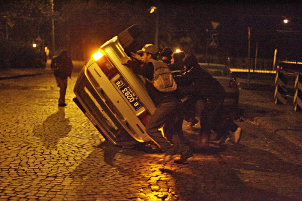
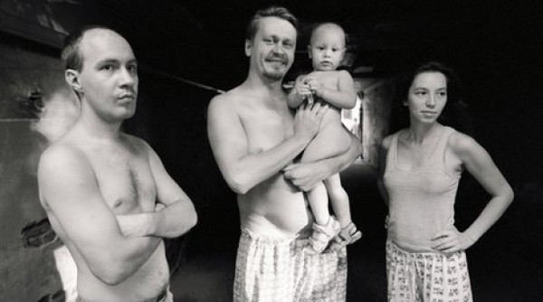
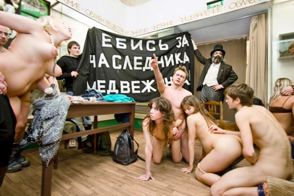

-
Art By Other Means: On Voina
by Yulia Tikhonova April 15, 2011
Voina, Palace Revolution, 2010. Via Buenos Aires Street Art
“Revolutions in Public Practice,” a two-day conference held by New York-based Creative Time in 2009, brought together the usual suspects in today’s art world — published academics, in-house activists and well-known artists. While the conference was touted as concerned with “the work of international cultural producers whose practice engages the public sphere on questions of social justice”, in reality it wasn’t very different from any of the other myriad discussions about political art practices that have come into vogue recently. Hosted by the institutions, funded by the institutions, these “discursive platforms” provide cozy and safe places to talk about methods of making a political impact.
Last December Voina (War), comprised of five young Muscovites, made news by flipping police cars, at night, in the center of St. Petersburg, some of which still had officers inside. Not long after the raid, Oleg Vorotnikov (aka “Thief”) and Leonid Nikolayev (aka “Lyonay the F*cknut) were seized by police, transported to St. Petersburg, and tossed into a pre-trial detention facility. They have been charged with criminal mischief motivated by “national hostility”; their conviction possibly landing them in prison for up to five years. Banksy approved of their intervention, donating a tidy sum to their defense (late in February a judge ordered them released on bail). Though often very close to politics in practice, members of Voina prefer to think of themselves as artists on the road to a new artistic language.
Voina, Dick captured by KGB, 2010. Via Groundswell
Russia has a proud tradition of agitation by handfuls of dissidents. Whether anarchist or communist, secret or public, these groups have often exerted as much force on the national consciousness as on any actual levers of power. Voina locates itself firmly within the anarchist strand of this history: “Anarchism is the only cohesive, honest and fearless power” Voina’s members said in the interview for Don’t Panic.
Founded in 2007 by handful of philosophy students at Lomonosov Moscow State University, the youthful cadre — they average mid-twenties in age — often use the symbols of pirates, recently projecting the skull-and-bones onto the former Russian parliament building. Their “Jolly Roger” laser projection was some 164 feet high, covering most of the front of the White House in Moscow, now the the seat of Russia’s Premier, Putin. Unlike the organized, structured forms of protest in the West, Voina’s Jackass-style actions embrace unruliness and disorder, one of the few forms of protest available in Russia’s increasingly unstable political situation.
In December 2010 the oligarch Khodorkovsky‘s run-in with the Kremlin — covered extensively in the Western press — led to a 14-year prison sentence. Meanwhile, over 800 people were arrested in central Moscow for protesting rising nationalism, which had led to attacks against guest workers in many major cities in Russia. These assaults were carried out by members of the post-Perestroika generation, born in the 1980s, whose own aspirations are running up against the limits of Russia’s neo-liberal nepotism, which offers little to those who are not members of the de-facto aristocracy of the Kremlin-connected. In 2008 Voina performed a mock hanging of two gay and three illegal workers inside a department store. The action was called the In memory of the Decembrists — A Present to Yuri Luzhkov and was intended as a direct attack against Moscow’s Mayor Luzhkov, whose policies are frequently denounced as racist and homophobic. One recalls the suspended human mannequins used by Mauricio Cattelan, even if Voina engaged real people. Leonid Nikolayev explained: “Today the innovative art-language is the only instrument to understand the xenophobic nonsense and chaos which is around us.” In framing the work, Voina was quite clear about their satirical intentions, yet when spontaneity is the watchword, both in radical protests and in the street, slippage can occur.
Voina members Leonid Nikolayev and Oleg Vorotnikov via BBC
There is a long tradition of political art in Russia taking place outside of institutions. With the Zeitgeist of perestroika in the 1990s, progressive artists swapped clandestine studios for protests in the streets. In 1993 the conceptual artist Anatoly Osmolovsky climbed onto the gigantic statue of the poet Vladimir Mayakovsky. In 1995 the provocateur Alexander Brener challenged Boris Yeltsin to a boxing match in Red Square. The art collective Radek built a barricade celebrating the 40th anniversary of May 1968, successfully blocking one of the major streets in Moscow. In the new century, with the tightening of Putin’s regime, political work changed tactics from pointed opposition to varieties of ridicule. The burlesque hints and tropes pushed by Voina rely on spectacle and shock. With Fuck for the heir — Medved`s little Bear! they staged an artistic portrait of 2008, pre-election Russia. This consisted of young people having group sex. The group stated in an interview that in Russia everyone metaphorically fucks everyone else
As in the West, there are Russian artists who prefer intellectual combat over risking their freedom zigzagging genitals in public. These operate on a high budget, and their work is often very professional and sleek. Antipodean to Voina, What is to be done? (Chto Delat?) started in 2003 with street actions and rallies confronting a resurgent capitalism. Recently however, the group has produced video work pursuing a kind of Brechtian mannerism. Curator Ekaterina Degot, recently describing the Russian art scene in ArtForum, noted that “everything is attuned to skillful production and visual coherence.” In contrast, Voina’s purposive vulgarity: “We struggle against glamor and conformism. In our action How to Snatch a Chicken? The Tale of How One Cunt Fed the Whole Group, a female activist stuffed a chicken into her vagina. We use the aesthetic of ugliness, absurd, and even nonsense.”
Voina, Fuck for the heir – Medved`s little Bear! via Don't Panic
It will be interesting to see if Voina acquires the new skills of “visual coherence” which Degot describes as now being part of the Moscow scene. Will Voina be invited to Biennales and asked to speak in the name of anti-professional, radical art? Their manifestos are unclear, mixing nationalist sentiment with more bombastic language. Alexei Plutser-Sarno, Voina’s chief ideologue, restricted the use of images early on. Counting anyone who has participated in any of their actions, Voina currently boasts 200 members, but the core is still six people planning in secret.
If there is an alternative to the relative violence of Voina, perhaps it is Tania Bruguera’s Party of Migrant People (PMP); an international institution with political aspirations could be considered as a new kind of radical practice. Creative Time’s audience had to be woken by a racket of a live instrumentalists — a flautist, a trumpeter, or a double-bassist. In Voina, no boredom beyond the bitter contradiction of authoritarian parody.

1 Comment
Voina stolen works at the Moscow Biennale | Tikhonova
[…] days ago the Russian group of artists-activists Voina(War) called for action against the curators of MEDIA IMPACT. INTERNATIONAL FESTIVAL OF ACTIVIST ART, a […]